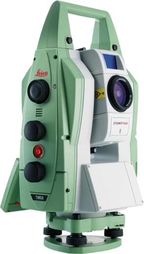

Топографическая съемка участка для газификации

В ООО «ГЕОПОИНТ» вы можете заказать услугу топографической съемки участка для газификации в Екатеринбурге. Она выполняется для создания топографического плана – документа, необходимого при проектировании подключения газовой трубы от места ее врезки до дома.
Топографическая съемка является подробным планом земельного участка, на котором будет проводиться газификация. В ней содержатся данные расстоянии между строениями, их высоте и других параметрах, рельефе газифицируемого участка. Кроме того, план должен содержать не только отображение газопровода, но и отметку о месте врезки отвода дома, а также съемку части территории, прилегающей к месту газификации.
Топографическая съемка участка для газификации, которую выполняют специалисты ООО «ГЕОПОИНТ», отвечает всем требуемым параметрам и условиям:
- Соблюдение масштаба 1:500 с содержанием на карте объектов наземного и подземного характера, всех сооружений и узлов коммуникаций, все данные согласовываются с владеющими указанными частями инфраструктуры организациями, которые пользуются коммуникациями.
- Топографический план создается с учетом привязки к общей схеме действующих газопроводов с характеристиками, то есть если рядом имеется газифицированный объект, на общей схеме отображают цокольный ввод.
- Указывается материал, диаметр газовой трубы и давление в ней, инженерная съемка согласовывается и утверждается в соответствующих инстанциях.
Чертежи сопровождаются масштабным изображением территории, где располагается объект газификации.
Топографическая съемка участка проводится в несколько последовательных этапов:
01
Собственник участка получает исполнительный чертеж с техническими условиями подключения и местом врезки у газовщиков, который используется при составлении топографического плана.
02
Полевые изыскания, во время которых проводятся замеры земельного участка газификации с использованием геодезического оборудования.
03
Далее подготавливается сам топографический план с обработкой полученных ранее сведений.
04
Согласование проведенной съемки в соответствующих инстанциях.
В случае необходимости масштаб топографической съемки, а также погрешность оценки рельефа могут быть изменены для большей детальности плана. В ООО «ГЕОПОИНТ» вы можете заказать услугу топосъемки участка газификации, необходимой при покупке или оформлении прав собственности на участок. Также такая съемка востребована и в тех ситуациях, когда участок уже находится в пользовании, по к газопроводу не подключен. Мы выполняем заказы на топографическую съемку участка в Екатеринбурге любой сложности, объемов и масштабов с гарантией точности, достоверности всех проведенных измерений. Топографический план составляется экспертами ООО «ГЕОПОИНТ» и в дальнейшем может быть использован при дальнейших работах по благоустройству участка, для которого был составлен.